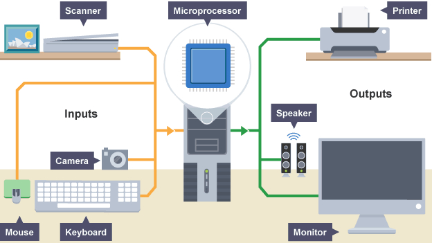
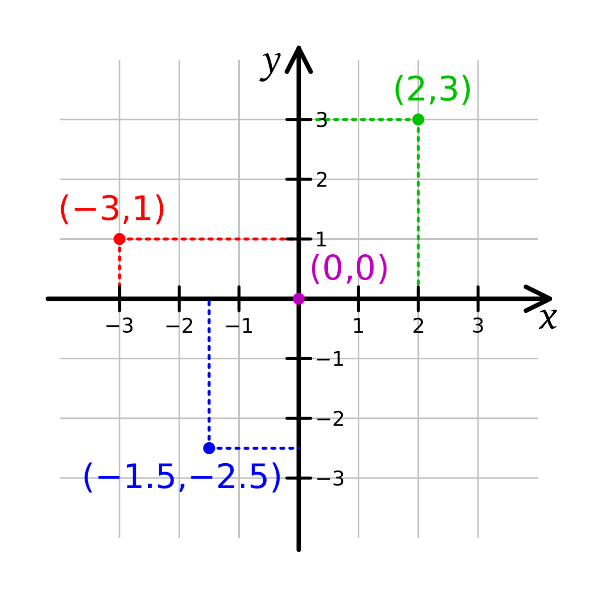
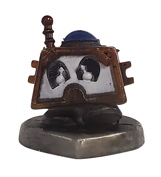
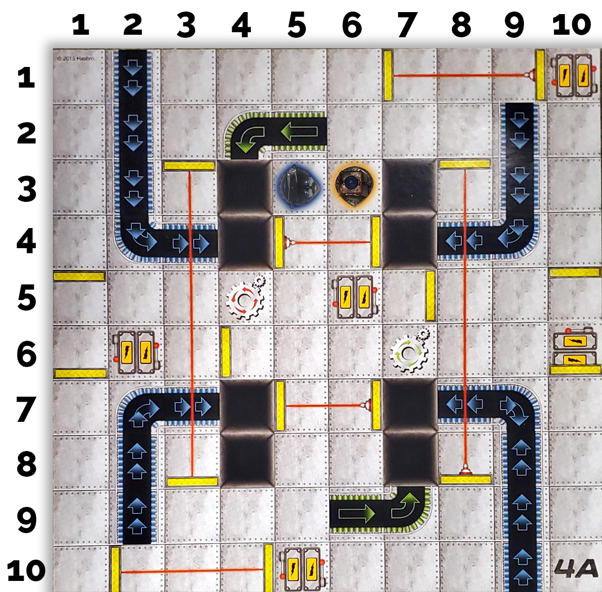

Input, Output, and Program State
Every software application operates on a fundamental loop: receiving data from the outside world, processing that data based on internal rules, and returning results. Understanding how programs handle input, generate output, and keep track of their internal state is core to understanding algorithm execution.
Input & Output (I/O)

At its simplest, input is any data or signal sent to a program for processing, while output is any data or signal produced by the program and delivered to a user or another system.
Biological vs. Computing Systems
Human beings rely on sensory inputs—touch, sight, sound, smell, and taste—to perceive their environment and determine intelligent outputs, such as swerving to avoid an obstacle or taking notes during a presentation.
Computing devices rely on input and output hardware peripherals to interact with physical environments:
- Input Peripherals: Keyboards, mice, touchscreens, gamepads, cameras, microphones, GPS receivers, accelerometers, and environmental sensors.
- Output Peripherals: Visual displays (monitors/screens), speakers, haptic feedback motors, printers, network cards, and automated actuators.
AP CSP Essential Knowledge: Program Inputs & Events
Program inputs affect the sequence of execution. Inputs can be delivered explicitly by a user (e.g., typing text or clicking a button), continuously through data streams (e.g., sensor readings or network packets), or non-sequentially through event-driven triggers (e.g., timer events or user actions).
Understanding Program State
In computer science, state refers to a complete snapshot of all variable values, data structures, and execution status in a program at any given moment in time.
While a program's state can change continuously during execution, it can only hold one definitive state at any single instant. In code, state is maintained by variables. When an event occurs or an instruction executes, variable values update, transitioning the program into a new state.
State Diagrams
Engineers use state diagrams to model how a system transitions between finite states in response to inputs or events:
[ State: Locked Door ] ─── Input: "Unlock Key" ───► [ State: Closed Door ]
│
Input: "Push Open"
│
▼
[ State: Open Door ]In game design, a player character's state might be defined by variables like position_x, position_y, health, is_jumping, and direction_facing. An input like pressing the "Jump" key triggers a transition that modifies is_jumping = True and changes the velocity variable.
Coordinate Systems in Software & Games

Tracking spatial state requires a coordinate system. While standard mathematics uses the classic Cartesian plane, graphics and software development often adapt coordinates to fit hardware displays.
1. Standard Cartesian Coordinates vs. Screen Coordinates
In standard mathematics, (0, 0) sits in the center of a graph, with positive numbers extending up and right, and negative numbers extending down and left.
In web development, 2D game design, and screen graphics, coordinate origins are typically positioned at the top-left corner (0, 0) of the window or screen canvas:
- X-axis: Increases as you move right.
- Y-axis: Increases as you move down (the reverse of standard algebra!).
2. Angles and Orientation State
In addition to position (x, y), spatial state includes orientation or heading angle:
0°→ Facing Right / East90°→ Facing Up / North (or Down depending on coordinate conventions)180°→ Facing Left / West270°→ Facing Down / South
3. 3D Spatial Systems
3D software adds a third axis (Z). In games like Minecraft, position is defined as (X, Y, Z), where X and Z represent horizontal movement across the ground, and Y represents elevation (height above bedrock).
Tracing Program State: Grid Simulations

A critical skill on the AP CSP exam is algorithm tracing—manually tracking variable states line by line or step by step.
Consider a board game simulation (like RoboRally or a grid-robot problem) where players queue up moves ahead of time. To predict outcomes, you must track state changes after each instruction.
State Representation in Code
We can model a robot's state in Python using variables or dictionaries:
# Initial State for Twonky
robot = {
"name": "Twonky",
"x": 6,
"y": 3,
"facing_angle": 270 # Facing South
}
def move_forward(robot, steps):
# Depending on heading, adjust state variables
if robot["facing_angle"] == 270:
robot["y"] -= steps # Moving South on standard Cartesian grid
elif robot["facing_angle"] == 90:
robot["y"] += steps # Moving North
# Execute Step
move_forward(robot, 3)
print(f"New Position: ({robot['x']}, {robot['y']})") # Output: (6, 0)Tracing Execution Steps
Evaluating state transitions step by step ensures that complex, multi-turn algorithms execute predictably:
- Initial State: Hammerbot at
(5, 3)facing0°; Twonky at(6, 3)facing270°. - Transition 1 (Twonky moves Forward 3): Twonky's
Y-coordinate decreases by 3. New State:(6, 0), facing270°. - Transition 2 (Twonky turns Right
90°): Facing angle updates:270° - 90° = 180°(Facing West). Position remains(6, 0). - Collision / Push Rule: If Hammerbot moves Forward 1 into
(6, 3)before Twonky acts, Hammerbot's movement pushes Twonky to(7, 3), updating Twonky's state before Twonky's planned turn executes.

State Practice
Let's play a game! Consider the robot's state while you're playing and what different actions would do to its state as the game progresses.
Conclusion Questions
Answer the following questions to verify your understanding of inputs, outputs, coordinate systems, and program state tracing.
- Identify two computing devices that use non-traditional hardware inputs (e.g., sensors, biometric scanners) and explain how those inputs are transformed into useful digital outputs.
- Explain the main difference between standard mathematical Cartesian coordinates and computer graphics/screen coordinate systems regarding the
Y-axis. - Suppose a grid robot starts at position
(x=2, y=5)facing East (0°). Trace the robot's state (position and direction) step-by-step through the following instructions:- Move Forward 2 units
- Turn Left
90° - Move Forward 3 units
- In game development, why is it necessary to track a player's state using multiple variables rather than just a single coordinate? List at least four state variables a game might track for a player character.